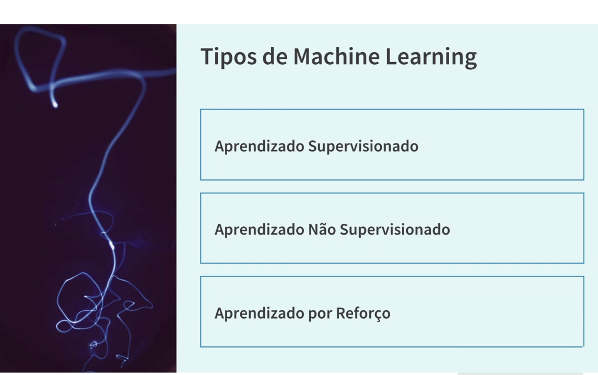

18_tipos_ml
Fonte:
Aulas/AI-Core-Concepts/01_Material_da_Aula/prints_da_aula/18_tipos_ml.png
SHA-256:21a07c0a57a8a935737dec8357642690ec75bf3a8107317f3e17bbcb828c0b3a
Imagem original incorporada para consulta visual; o texto da imagem não foi transcrito por OCR.
Material do acervo acadêmico fornecido pelo usuário. Autoria e direitos permanecem com os titulares indicados na fonte.
